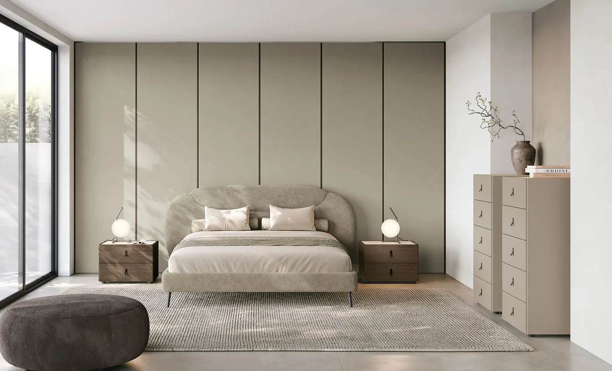
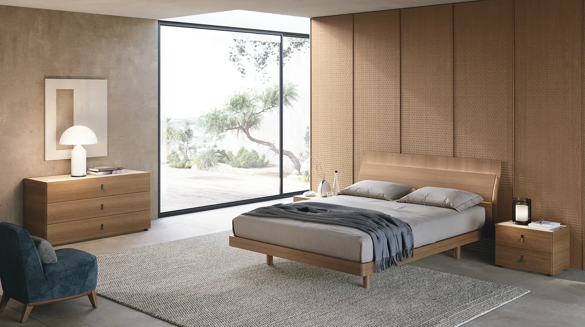
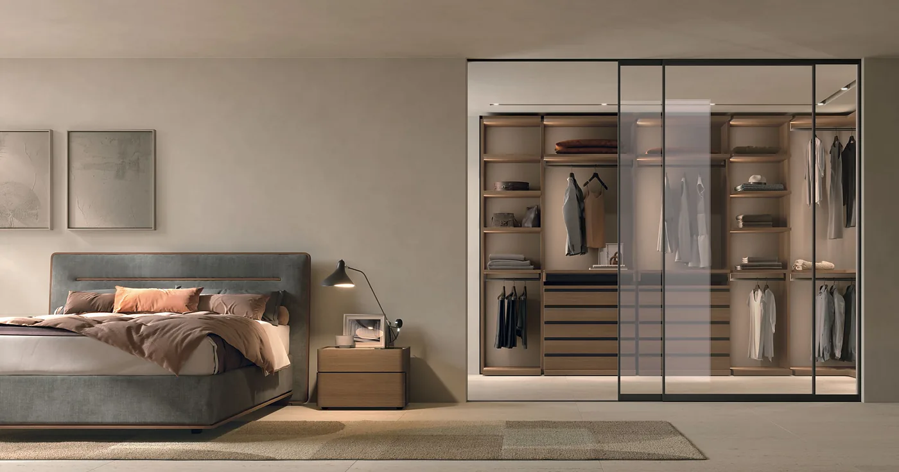
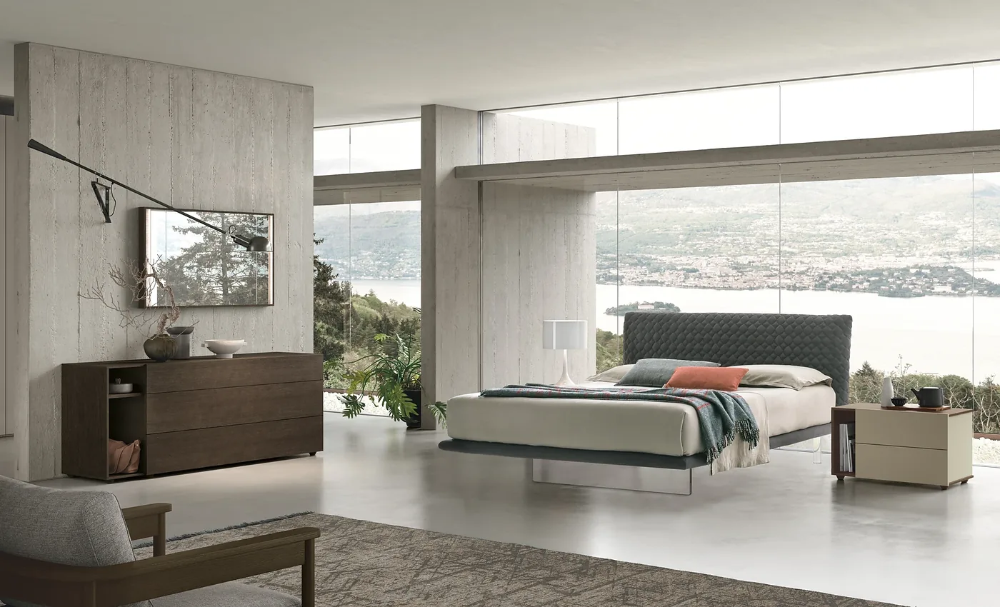
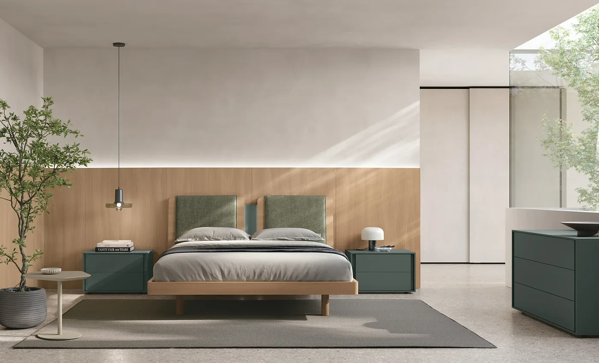
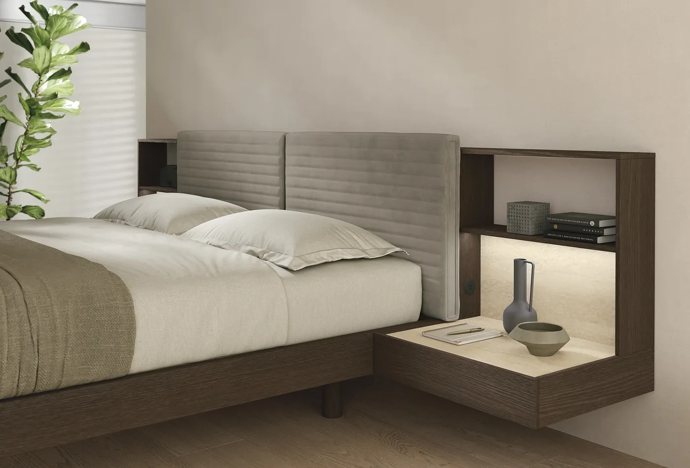
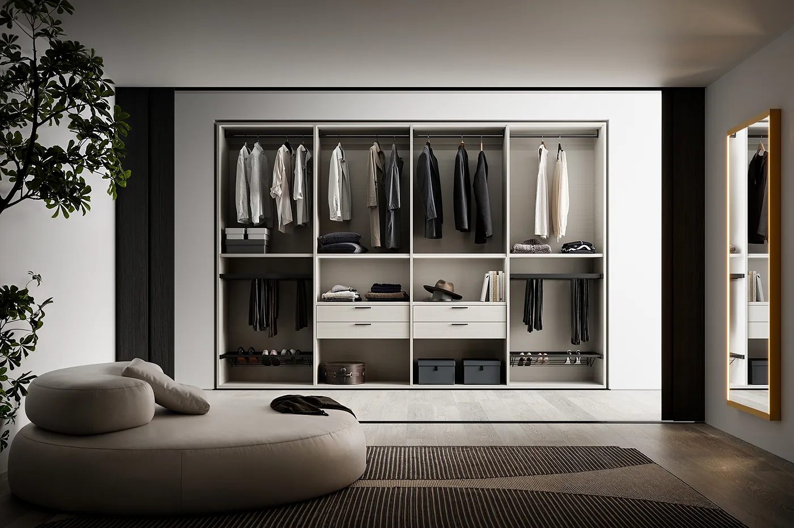
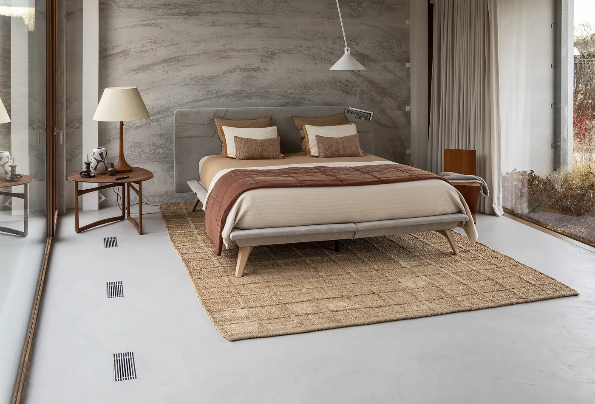
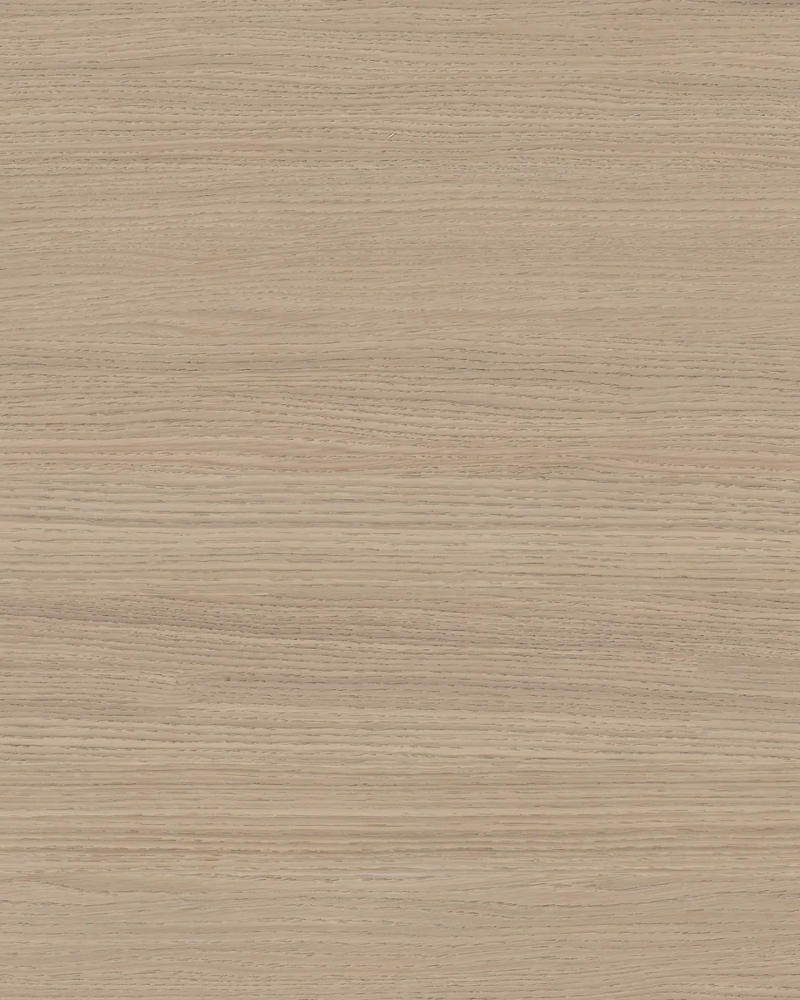

Lits, chevets, armoires, dressings
Chambre
La pièce où la journée se termine, et où la suivante commence.
- Finitions coordonnées
- Projection 3D de votre projet
- Première visite et conseil offerts

Le soir
Le bois se prolonge derrière le lit.
Lit Ophelia, photo Tomasella.

Le matin
Ouvrir l’armoire depuis le pied du lit.
Mesurer la place devant les portesArmoire Denver à portes battantes, photo Tomasella.

Derrière la paroi
Les vêtements se voient depuis la chambre.
Découvrir le dressing DoxaDressing Doxa, photo Tomasella.
Ambiances
Chacun sa chambre.
-

Face à la vue
-

Bois et vert profond
-

Le chevet suspendu
-

Tout sous les yeux
Parlons de votre chambre.
Apportez une photo des meubles que vous gardez et les dimensions du mur à aménager. Parking facile d’accès, avec ou sans rendez-vous.
- Lundi
- 13h30 – 18h30
- Mardi au samedi
- 10h30 – 18h30
- Dimanche
- Fermé
- Téléphone
- 064 46 07 72
- Livraison
- Par nos soins, dans le Hainaut (Binche, La Louvière, Mons, Charleroi…) et la province de Namur
Nous livrons aussi dans le nord de la France. Ailleurs, dont Bruxelles : sur demande.
Données techniques · Lits, armoires et dressings
Explorer la chambre
Une chambre qui s’accorde.


Armoires
Armoires et garde-robes.
Portes battantes ou coulissantes, compartiments : choisissez la façade et l’organisation intérieure selon ce que vous souhaitez ranger.

Dressing
Quand la pièce a ses contraintes.
Un dressing ouvert, un recoin, une sous-pente, un mur aux dimensions particulières : le sur mesure prend le relais. Modules ou sur mesure : la page Rangements et aménagement aide à choisir.

L’ensemble
Le meilleur de chaque fabricant, dans la même chambre.
Une armoire Tomasella, un boxspring belge, des chevets assortis : nous composons votre chambre en associant les fabricants. Le matelas et le boxspring, eux, se choisissent allongé, au magasin. Par quoi commencer ? L’espace nuit réunit la literie et la chambre.
Les fabricants de la chambre
Les fabricants
Trois fabricants pour votre chambre.
Tomasella pour composer la chambre entière. Staud et GBO by Bauwens se commandent aussi, selon votre projet et votre budget.
-
Tomasella
Lits, chevets, armoires et dressings fabriqués en Italie.
Voir Tomasella -
Staud
Les armoires à portes coulissantes Sinfonie, d’un fabricant allemand : largeur, hauteur et profondeur se choisissent.
-
GBO by Bauwens
Des chambres d’un fabricant belge.
Du mur au projet : notre façon de faire
Du mur au projet.
-

Les matières en main
Bois, laques mates et décors, au magasin.
-

Votre composition
Les modules à la largeur de votre mur.
-

Votre projet en 3D
Pour voir avant de décider.

Vos questions
Avant de commencer.
Peut-on assortir le lit, les chevets et l’armoire ?
Oui. Lits, chevets et armoires existent dans des finitions coordonnées, selon les collections.
Faut-il prendre les mesures soi-même ?
Vos mesures et une photo suffisent pour commencer. Si vous le souhaitez, nous venons les relever chez vous.
Où choisir le matelas ?
Sur la page Literie : boxsprings, matelas et sommiers s’essaient allongé au magasin.
Conseils
Pour aller plus loin.
-
Quelle profondeur pour un dressing ?
Les repères à prendre chez vous, avant de venir.
Lire le guide